x
dt
t
x
2
0
= Énergie

Maëva Garnier
Laboratoire d’Acoustique musicale
11 rue de Lourmel. 75015 Paris
Table des matières
Chapitre 1 : Concepts essentiels de traitement du signal 3
1.2. Classification des signaux 4
1.2.1. Classification dimensionnelle 4
1.2.2. Classification phénoménologique 4
1.2.3. Classification morphologique 4
1.2.4. Classification énergétique 5
1.3. Signaux et distributions classiques 5
1.3.1. Fenêtre rectangulaire ou Porte 5
1.4.1. Rappels sur la décomposition en série de Fourier des signaux périodiques 6
1.4.2. Définition de la Transformée de Fourier 7
1.4.3. Le produit de convolution 8
L’impulsion de Dirac est l’élément neutre de la convolution, c’est à dire que 8
1.4.4. Propriétés de la transformée de Fourier 9
1.4.5. Transformées de Fourier des signaux courants 10
1.5. Evaluation de la similitude entre deux signaux 10
1.5.1. Les fonctions d’inter- et d’auto-corrélation 11
1.5.2. La fonction de densité spectrale d’énergie 11
1.6. Les signaux numériques 12
1.6.1. Définition de l’échantillonnage 12
1.6.2. Définition et propriétés de la transformée de Fourier d’un signal échantillonné 12
1.6.2. Conséquences de l’échantillonnage du point de vue fréquentiel 13
Chapitre 2 : Modes de représentation des signaux 15
2.3. Pertinence et choix d’un mode de représentation 18
2.4. Le spectre moyenné (Long Term Average Spectrum LTAS) 20
Chapitre 3 : Systèmes linéaires et filtrage 22
3.1. Réponse impulsionnelle d’un système 22
3.2. Réponse en fréquence d’un système 23
3.3. Fonction de transfert d’un système (et définition de la Transformée en Z) 24
L'information, qui se présente à nous lors de l'observation d'un phénomène, se manifeste sous forme d'une ou plusieurs grandeurs physiques qui se déroulent à la fois dans le temps et dans l'espace. Dans les problèmes rencontrés en pratique, on est souvent amené à s'intéresser plus particulièrement à l'un ou l'autre de ces deux aspects. On désigne alors par le terme de signal l'évolution temporelle, tandis que l'on désigne par le terme d'image l'évolution spatiale.
Les différents traitements, que l'on fait subir aux signaux, nécessitent pour être étudiés des outils mathématiques appropries, qui sont à la base du traitement du signal. Dans ce cours nous envisageons l'étude de certains de ces outils.
En signal on modélise la grandeur physique observée par un objet mathématique dépendant de la variable réelle t représentant le temps. Dans la suite, le mot signal désignera indifféremment la grandeur physique observée ou l'objet mathématique servant à la modéliser.
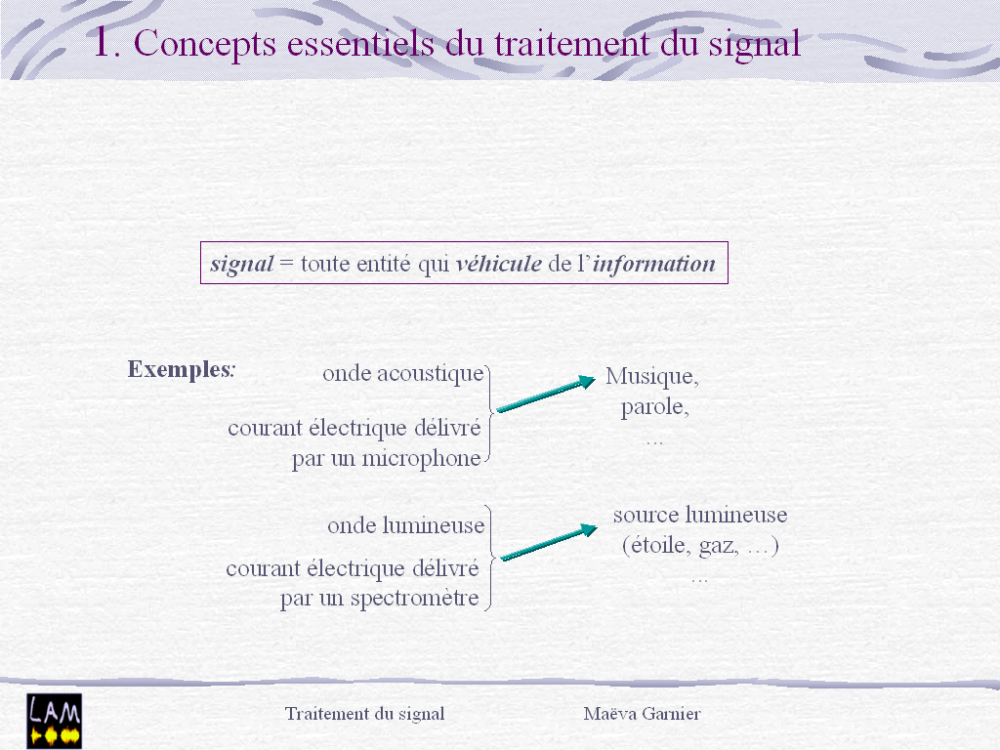
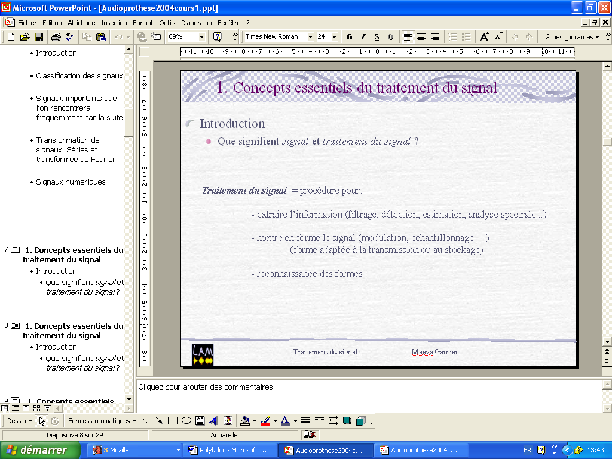
En théorie du signal, on a l’habitude d’envisager plusieurs types de signaux. Pour rendre la suite de ce cours plus compréhensible, nous présentons dans ce paragraphe les différents modes de classification des signaux .
On peut différentier les signaux selon leur nombre de variables libres. Par exemple un signal électrique V(t) est un signal unidimensionnel dépendant du temps. Une image statique en noir et blanc peut être modélisée par un signal bidimensionnel correspondant à la brillance en fonction de la largeur et de la hauteur de l’image. Enfin, un film en noir et blanc peut être considéré comme une image fonction du temps, autrement dit modélisé par un signal tridimensionnel dépendant le l’abscisse et de l’ordonnée de l’image mais également du temps.
la première distinction porte sur notre capacité à prédire l'évolution temporelle de la grandeur observée. Si on prend, par exemple, un oscillateur sinusoïdal d'amplitude A et de fréquence f0, moyennant la mesure de A et de f0, on peut alors prédire la valeur de l'amplitude, à tout instant, par l'expression x(t) = Acos(2¼f0t). Un tel modèle de signal est dit déterministe. Il existe cependant des situations où il n'est pas concevable d'expliciter, de cette façon, la forme de l'évolution temporelle du signal. C'est le cas, par exemple, pour la tension engendrée à la sortie d'un microphone ou encore pour le courant électrique produit par l'agitation thermique des particules dans un conducteur (bruit de fond). On ne peut pas dire avec certitude combien vaudra x(t) à l'instant t, mais on pourra éventuellement supposer que cette grandeur est distribuée suivant une certaine loi de probabilité. On dit alors que le signal est aléatoire.
Pour simplifier, on peut dire que les signaux déterministes sont des cas relativement théoriques et idéaux, ou bien modélisent des signaux observés expérimentalement. Car en fait, tout signal physique réel comporte une composante aléatoire correspondant à la perturbation externe.
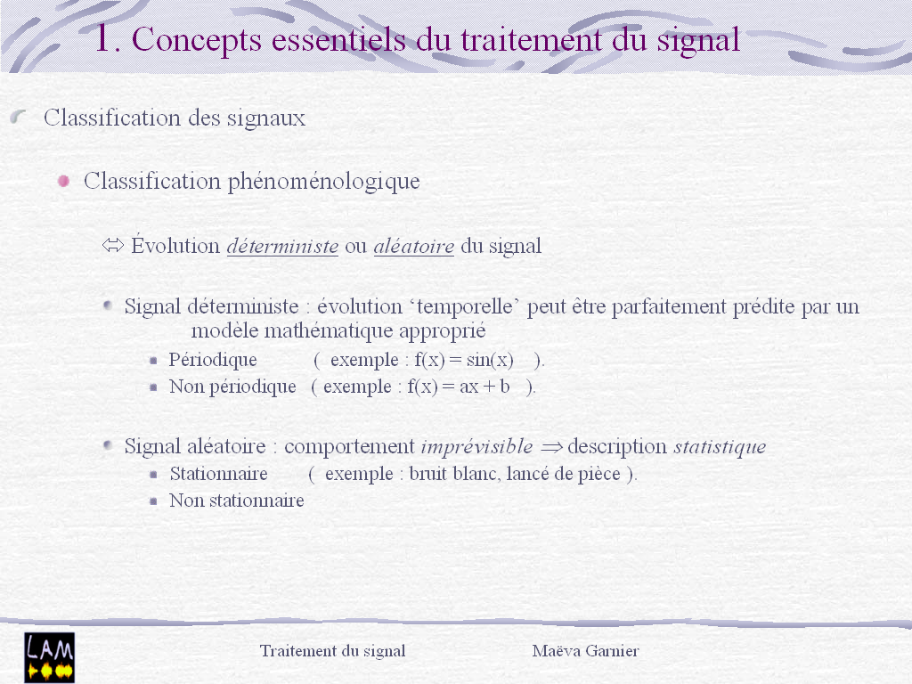
Si, comme c'est le cas pour le signal x(t) = Acos(2¼f0t), le temps t prend ses valeurs dans R, on dit que le signal est à temps continu. Toutefois on rencontre aussi en traitement du signal des grandeurs qui évoluent uniquement à des instants discrets tn où n est un entier. On parle alors de signal à temps discret ou encore de signal numérique. En terme mathématique, un signal à temps continu est une fonction du temps tandis qu'un signal à temps discret est une suite. Le développement et l'essor des techniques numériques ont fait que les problèmes portant sur le traitements des signaux à temps discret ont pris une place majeure aujourd'hui, comparée à celle qu'occupent les traitements portant sur les signaux à temps continu. C'est pourquoi ce cours est centre avant tout sur les problèmes de temps discret et sur le passage du temps continu au temps discret (théorème d'échantillonnage).
Il est également possible de discrétiser le signal en amplitude. On appelle cela la quantification du signal.
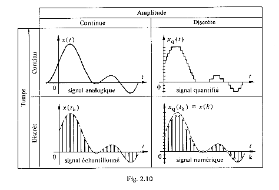
On distingue en particulier deux types de signaux :
- Les signaux à énergie finie (Tout signal physique)
- Les signaux à puissance moyenne finie (Idéalisation. exemple: signal sinusoïdal)
Notation : Π2a (t)
Représentation :
Les propriétés de l’impulsion de Dirac sont identiques à celles d’un signal rectangulaire dont la largeur tend vers 0 et la hauteur vers l’infini, à surface constante. La réponse d’un système à un signal “extrêmement bref” sera décrite par sa réponse à l’impulsion de Dirac.
Le peigne de Dirac correspond à un périodisation d’impulsions de Dirac tous les nT sur tout l’axe de des temps (aussi bien t<0 que t> 0).
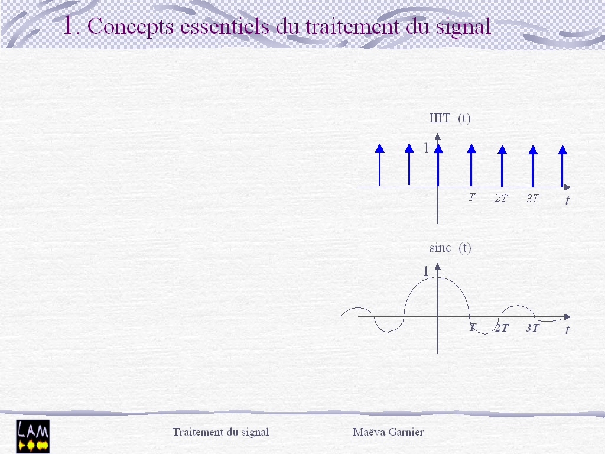
ШT (t) = Σ δ(t-nT)
Le sinus cardinal se définit par la formule : Sinc (t) = sin(t) / t .
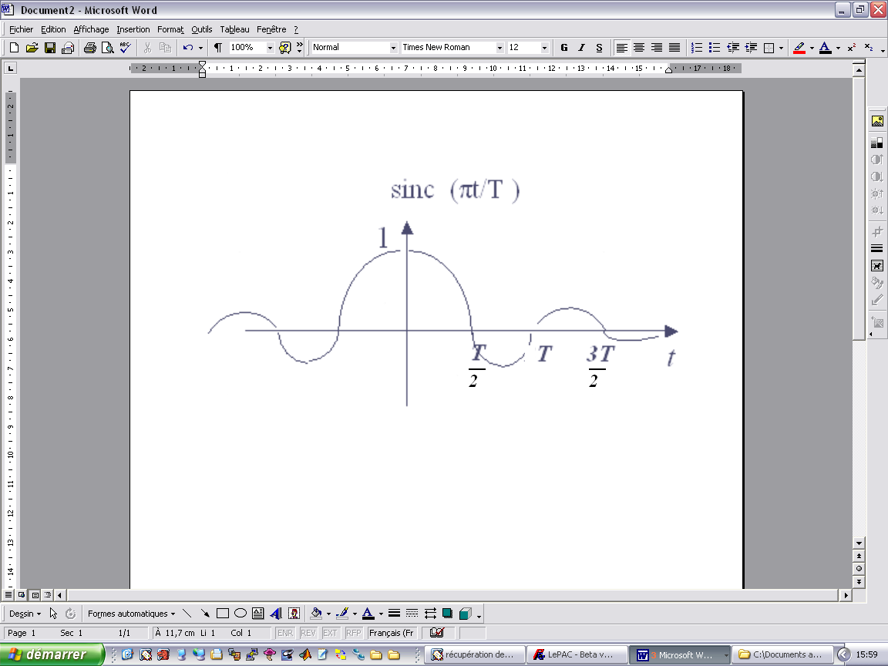
Tout signal périodique est décomposable en une somme de sinus et de cosinus.
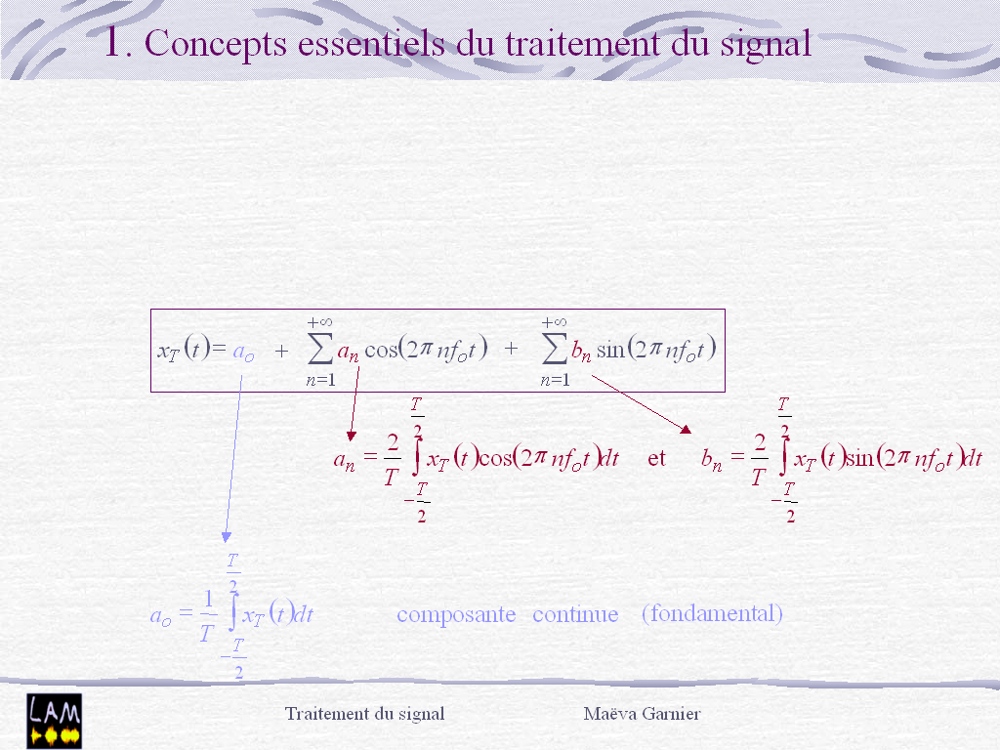
La composante continue de cette décomposition, aussi appelée fondamentale, correspond à la hauteur perçue d’un son par exemple. Cette composante est à la fréquence inverse de la période du signal.
Les autres composantes sont de fréquences supérieures à la fondamentale et sont appelées harmoniques du signal. Toujours dans le cas d’un son harmonique , joué par exemple par un instrument de musique, la fondamentale va correspondre à la note jouée et les autres composantes vont correspondre à la « série harmonique » de cette note (octave, puis quinte, puis octave, puis tierce…etc). Cette série correspond à des rapports de fréquences (fondamental fo, octave = fo*2, octave + quinte = fo*3…etc). Les harmoniques ne vont pas directement contribuer à la perception de la hauteur mais plutôt à la richesse du timbre du son. C’est par exemple la présence d’harmoniques -entre autres- qui permet de différentier une sinusoïde à fo (seulement un fondamental => son proche d’un buzzer électronique) d’une note de violon jouée à la même fréquence.
La transformée de Fourier est une « généralisation » de cette décomposition aux signaux non périodiques.
On définit la transformée de Fourier comme :
inverse" Fourier
de
e Transformé "
2 exp et
dee
Fourier"
de
e Transformé "
2 exp ) ( 1 . i X X t x t x dt ft i t x f X t x TF déf
df ft f f
TF
X(f) est une fonction complexe même si x(t) est réel. |X(f)| est appelé “spectre d’amplitude” et Arg[X(f)] =“spectre de phase” du signal.
La variable f s'appelle la fréquence. Son unité est le Hertz (en abrégé : Hz).
La Transformée de Fourier est un opérateur mathématique qui permet d’analyser et de représenter un signal dans le domaine fréquentiel. La TF ne modifie pas le signal mais permet seulement de l’observer selon différents points de vue.(temporel ou fréquentiel). Il est important de retenir que x(t) et X(f) sont deux descriptions équivalentes du même signal. Ces deux fonctions contiennent la même information. Il s’agit juste de deux descriptions dans des domaines différents (temporel et fréquentiel).
X(f) apporte des information sur le système physique à l’origine du signal. Elle permet par exemple de différentier un son de trompette d’un son trombone, ou bien encore différentes ondes cérébrales , mieux qu’en observant le signal dans le domaine temporel.
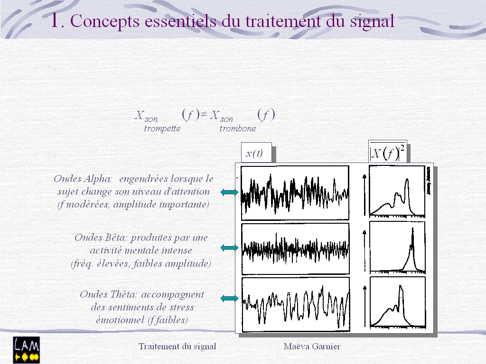
On appelle convolution de x(t) par y(t) l'opération notée x(t) * y(t) et définie par :
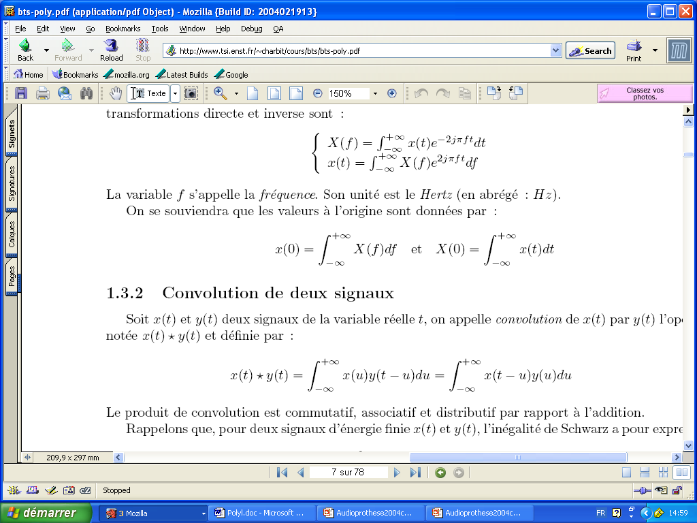
x(t) * δ (t) = x(t).
Lorsque l’on convolue un signal x(t) à un Dirac en to par exemple, cela revient à retarder le signal x(t) de to : x(t) * δ (t-to) = x(t-to).
Alors que si l’on multiplie un signal x(t) par un Dirac en to, cela revient à connaître la valeur que prend x(t) en to (comme si l’on relevait l’ordonnée d’un point particulier d’une courbe) x(t) . δ (t-to) = x(to).
De même, lorsque l’on convolue un signal x(t) à un peigne de Dirac (de période T), cela revient à « périodiser » le signal x(t) tous les nT : on retarde le signal x(t) de T , de 2T, de 3T….etc x(t) * ШT (t) = Σ x(t-nT)
Tandis que si on multiplie le signal x(t) par un peigne de Dirac, on prélève des échantillons du signal x(t) tous les nT. Nous verrons plus loin que cette opération correspond à l’ «échantillonnage» du signal x(t).
x(t) * ШT (t) = Σ x(nT)
De façon plus générale, la convolution telle qu’elle est définie par sa formule mathématique, revient à retourner temporellement un des deux signaux (par exemple x(t) ) puis à le déplacer sur tout l’axe du temps et à sommer toutes les multiplications de ce signal retourné déplacé au deuxième signal ( y(t) ) .
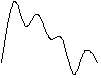
x(u) x(-u) x(t-u) Temps
u u
u
Retournement temporel t est un instant qui varie du signal x dans le temps u de -∞ à +∞.
On fait « glisser » le signal
x(-u) selon l’axe du temps.
x(t-u) y(u) x(t-u) u y(u) x x x
x(t-u) u y(u) + +
u
On multiplie y(u) par x(t-u) pour chaque position de t sur l’axe du temps et on somme tous les produits effectués.
x(u) *
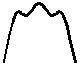
u y(u)
Temps
u
Linéarité de la TF : a x(t)+b y(t) a X(f)+b Y(f)
Produit de convolution :
x(t).y(t) X(f) * Y(f)
x(t) * y(t) X(f) . Y(f)
Une multiplication dans un domaine correspond à un produit de convolution dans l’autre.
Retard :
x(t-to) X(f) e-i2pfto
x(t).ei2pfot X(f-fo)
Un retard UU<u
Un retard temporel correspond à un déphasage au niveau fréquentiel, et inversement.
Changement d’échelle : x(at) 1/a * X(f/a)
Théorème de Parseval :
Énergie = |x(t)|² dt = |X(f)|² df
Dirac (t) signal unité
Signal porte sinus cardinal
Sin(2 Pi fo t) ½ ( dirac (f-fo) + dirac (f+fo)
A complèter avec vos notes de cours….
Il existe en traitement du signal des outils mathématiques qui permettent d’évaluer la similitude entre deux signaux,
-au niveau de leur évolution temporelle grâce à la fonction d’inter- ou d’auto-corrélation.
-au niveau de leur composition spectrale grâce à la fonction de densité spectrale.
La fonction d’intercorrélation se définit par la formule suivante :
* dt t y t x xy
La fonction d’autocorrélation est un cas particulier de la fonction d’intercorrélation pour y(t) = x(t). Elle se définit par :
* t x t x x
dt
La fonction d’autocorrélation mesure la similitude de x(t) avec une version décallée de x(t). Elle atteint un maximum pour le temps to auquel x(t-to) ressemble le plus à x(t). C’est le cas particulièrement pour les signaux périodiques qui reprennent la même valeur à chaque période T. La fonction d’autocorrélation permet ainsi d’estimer la période d’un signal périodique en repérant le temps pour lequel elle atteint son maximum.
La fonction d’autocorrélation permet également de calculer l’énergie du signal puisque
x dt t x 2 0 =
Énergie
La Fonction de densité spectrale d’énergie est la TF de la fonction d’autocorrélation. Elle décrit la répartition de l’énergie en fréquence.
2 f f X TF
( x x )
Les signaux numériques dérivent d ’un signal analogique par échantillonnage. L'échantillonnage est une opération qui consiste à prélever sur un signal à temps continu une suite de valeurs, prises en une suite d'instants tn, n étant entier. Dans la suite nous n'envisagerons que l'échantillonnage dit régulier où tn = nT. L'intérêt porte aux problèmes de l'échantillonnage tient dans le développement des techniques numériques de traitement du signal. En Physique il est fréquent que les résultats expérimentaux soient sous forme d’une suite de valeurs numériques. Les possibilités d’application du traitement numérique des signaux sont d’autant plus nombreuses que la vitesse de calcul des microprocesseurs est élevée. Pour caractériser et traiter un tel signal numérique on peut utiliser les même concepts mathématiques que pour les signaux continus, à condition de les adapter aux contexte numérique.
Le signal continu (analogique) peut être échantillonné (ou discrétisé) à une fréquence d’échantillonnage Fe (= 1/Te).
Cette échantillonage revient à multiplier le signal analogique par un peigne de Dirac de période Te.
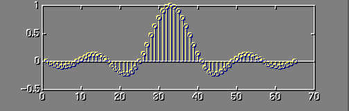
Le signal échantillonné peut alors s’écrire :
n a e nTe t t x t x ) (
xe(t) est donc nul partout sauf en t= nTe, n variant de -à
C’est pourquoi par la suite, on ne simplifie cette notation en réduisant xe(t) non plus à un signal continu possédant une infinité de valeurs mais à une suite d’échantillons discrets x(n), où n correspond au numéro de l’échantillon.
x(n) = xe ( n Te )
Dans le cas des signaux échantillonnés, il n’est plus nécessaire d’utiliser des intégrales pour sommer les valeurs de x(t) sur tout l’axe des temps, puisqu’un signal échantillonné peut être assimilé à une suite d’éléments discrets.
O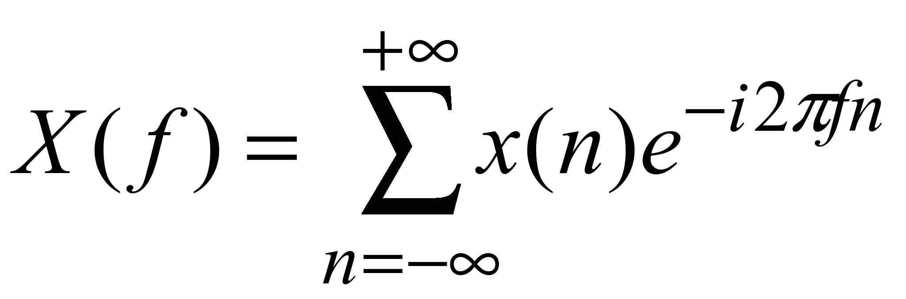
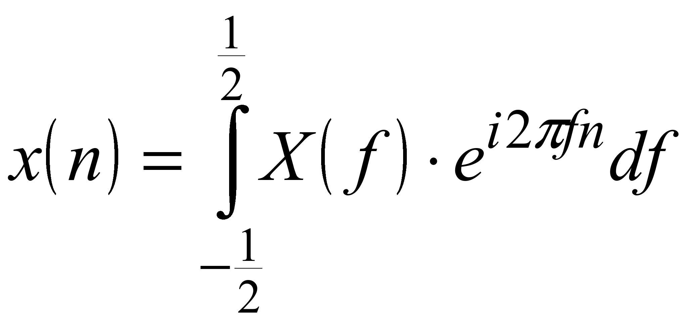
n
peut donc définir la transformée de Fourier d’un
signal numérique par :
De la même façon qu’en continu, la TF présente certaines propriétés intéressantes :
retard: x(n-no) X(f) e-j 2πfno
produit de convolution: x(n) * y(n) X(f) . Y(f)
x(n) . y(n) X(f) * Y(f)
avec x(n) * y(n) = x(k) y(n-k) = x(n-k) y(k) .
En écrivant xe(t) = xa(t) . (t- nTe), on peut alors exprimer la transformée de Fourier du signal échantillonné à partir de la TF du signal analogique.
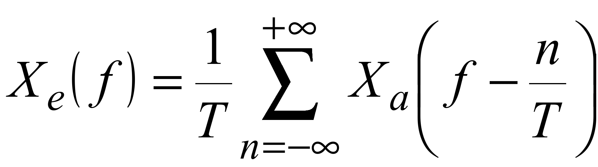
On voit que l’échantillonnage d’un signal analogique (à la fréquence d’échantillonnage Fe = 1/T) induit une périodisation de son spectre dans le domaine fréquentiel, tous les f =n/ T, n étant entier.
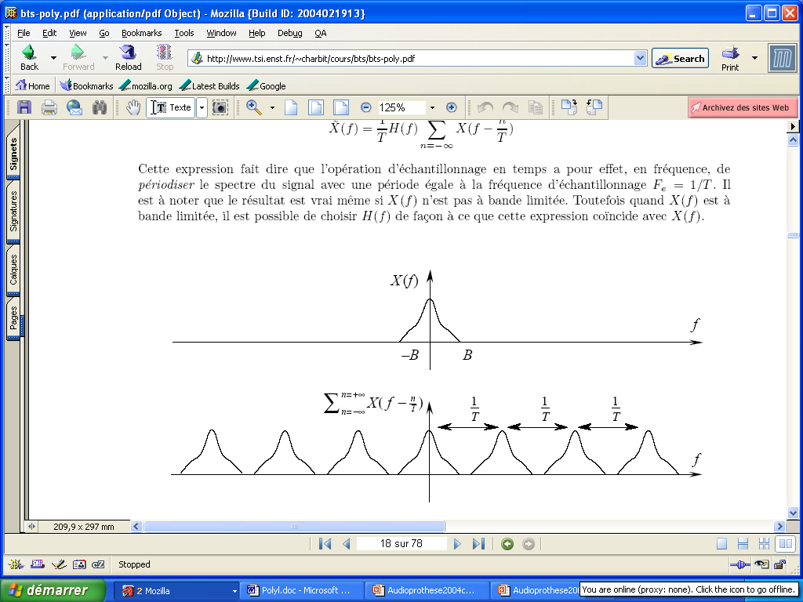
Xa(f) Xe(f)
= B -B
Il peut survenir un problème si la fréquence d’échantillonnage Fe = 1/T est trop petite car les « répliques » périodiques du spectre peuvent se superposer partiellement .
Xe(f)
Xa(f)
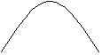
f 1/T
-B
B
Cela arrive si borne max (Xa(f)) > borne inf (1ere réplique de Xa(f) en f =1/T)
Autrement dit si B > 1/T - B
Pour que le spectre Xa(f) ne soit pas « déformé » lors de sa périodisation, il faut donc que :
Fe < 2 B
Cette condition est appelée Théorème de Shannon.
Nous avons vu dans le chapitre précédent que la Transformée de Fourier permet de représenter le spectre d’un signal dans le domaine fréquentiel. Pour une sinusoïde infinie, toute l’énergie du spectre est concentrée à une fréquence donnée, c’est à dire la fréquence de la sinusoïde.
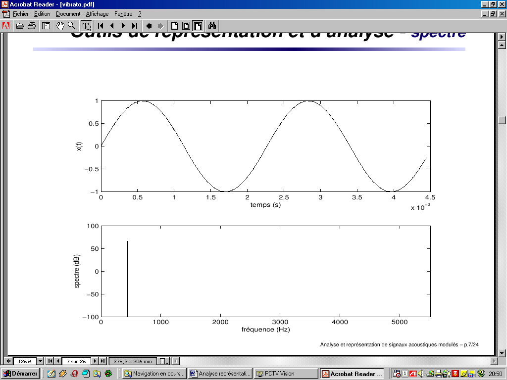
Si on veut observer ce sinus sur un temps fini, on va être obligé de le tronquer. L’énergie va alors d’une part se répartir autour de la fréquence de la sinusoïde (c’est ce qu’on appelle l’étalement spectral), d’autre part on observe la présence d’énergie dans toutes les fréquences (Ce phénomène est appelé fuite spectrale). Etalement et fuite sont liés à la troncature.
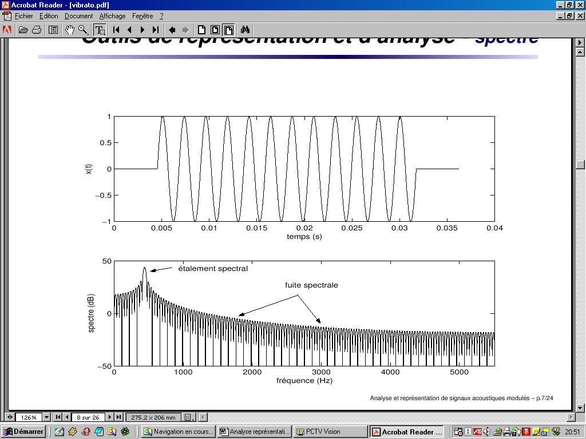
Si on réalise la troncature de façon non rectangulaire, mais en « fenêtrant » le signal par une fenêtre de Hanning par exemple, les transitions dans le signal sont alors plus douces. Cela limite la fuite spectrale mais en revanche augmente l’étalement en fréquence. Ce point est important pour comprendre le rôle des fenêtres d’analyse. Si la fenêtre a des discontinuités fortes, les fuites spectrales vont être importantes, mais l'étalement moindre. Si on prend un fenêtre de discontinuité plus douce, on va au contraire obtenir un étalement plus grand, mais moins de fuites spectrales.
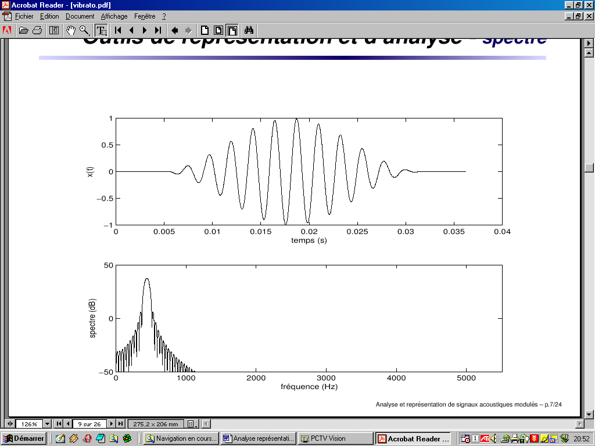
L’intérêt du spectrogramme est de pouvoir représenter le spectre en évoluant dans le temps. Le nom scientifique de la fonction mathématique associée à cet outil, plus communément appelé « spectrogramme », est la Transformée de Fourier à Court Terme (TFCT). Ce nom provient de l'analyse effectuée sur des fenêtres de support temporel fini. Une autre dénomination de cette représentation est « sonagramme ». Il s’agit d’une marque déposée Kay Electronics.
Le principe du spectrogramme est de « découper » le son en tranches ou trames qui se recouvrent. Pour chacune de ces tranches on calcule une transformée de Fourier. Ce spectre est alors représenté à un temps correspondant à celui du centre de la fenêtre, sous forme d’un code de couleur. Sur l'exemple suivant, le jaune correspond aux amplitudes les plus fortes, le bleu/violet aux amplitudes les plus faibles. On a ainsi une idée de l’aspect du spectre au temps t. A chaque calcul du spectre, le signal est fenêtré de façon à pouvoir régler à la fois la fuite et l’étalement spectral.
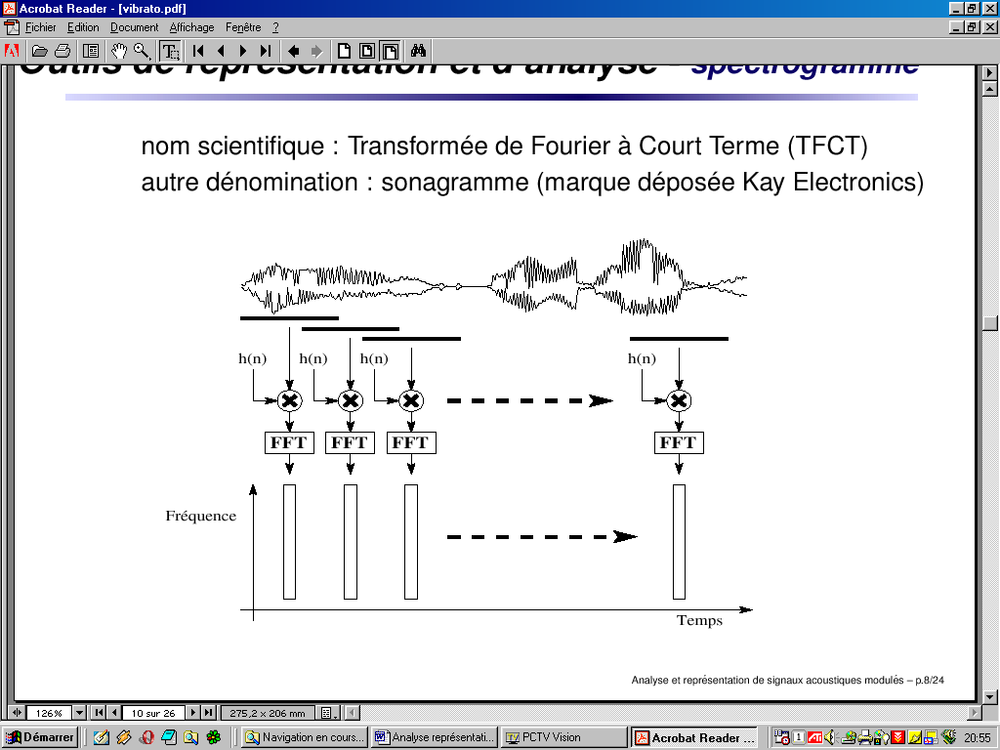
Voici un exemple de voix chantée. Il s’agit d’un glissando C5-E5 réalisé par une soprano. L'analyse a été effectuée avec une fenêtre de Hanning de longueur 23 ms. Sur le spectrogramme, on observe bien le glissando et le vibrato de la chanteuse.
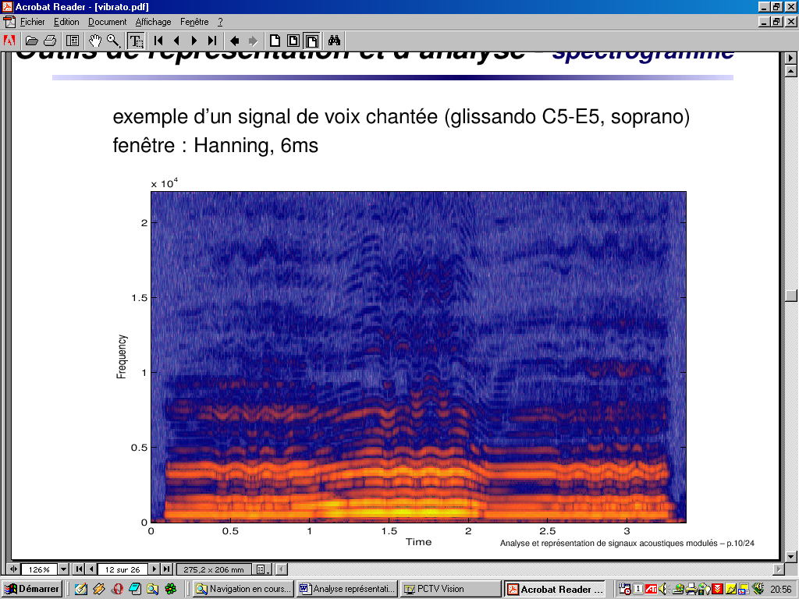
Pour mesurer le vibrato par exemple, on serait tenté de réduire la longueur de la fenêtre dans le temps pour gagner en précision et suivre au mieux les variations du spectre. En réalité, si on réduit la longueur des fenêtres, l’étalement spectral augmente, par conséquent la largeur des raies sur le spectrogramme aussi, ce qui perturbe finalement la mesure, car on ne distingue plus distinctement les différentes trajectoires dans le spectrogramme.
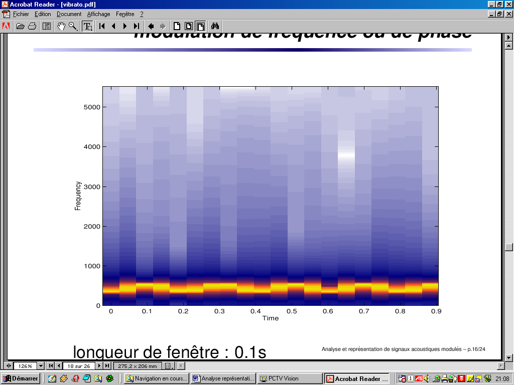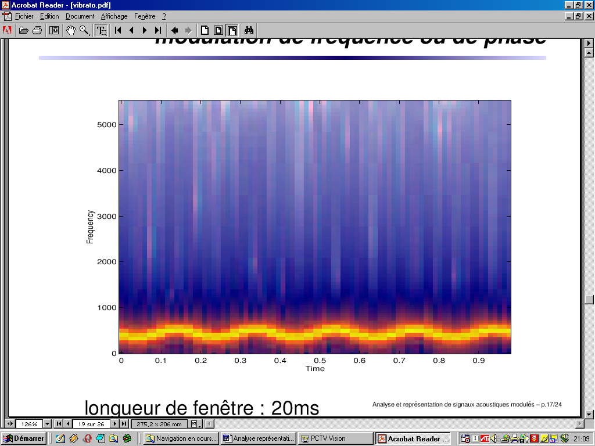
Fenêtre
de 100 ms Fenêtre
de 20 ms
Si on revient à la même longueur de fenêtre que dans le premier exemple, tout en utilisant une fenêtre rectangulaire au lieu de la fenêtre « douce » de Hanning, l’étalement spectral est plus faible et les lignes sur le spectrogramme plus fines, mais on a par contre des fuites spectrales beaucoup plus importantes, caractérisées par un manque de contraste dans la représentation du spectrogramme.
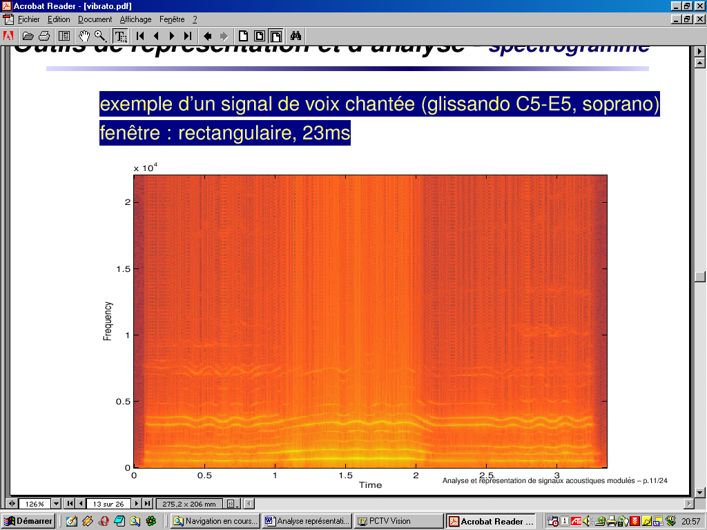
Les points importants quant à l’utilisation du spectrogramme sont donc:
la longueur de fenêtre pour ajuster la précision temporelle, au prix d’un étalement spectral qui peut devenir rédhibitoire
le choix de la fenêtre qui va conditionner le contraste du spectrogramme, pour une longueur de fenêtre donnée.
La représentation du signal en temporel est particulièrement adapté à l’analyse de ses variations temporelles (par exemple l’attaque ou l’extinction d’un son).
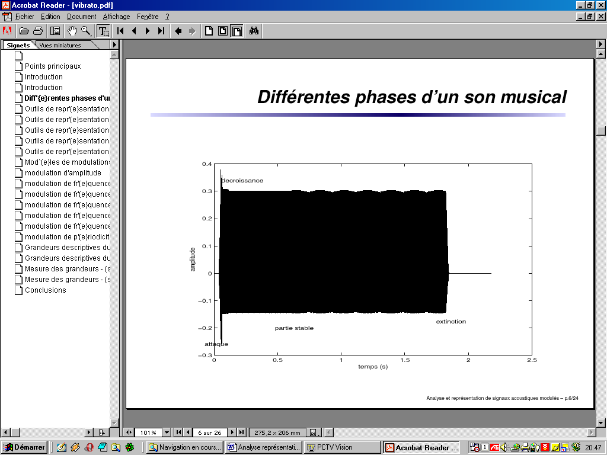
Au contraire, cette représentation apporte peu d’information lorsqu’on s’intéresse plutôt au contenu spectral du signal. Sur la figure suivante, on voit que la représentation spectrale de ces deux signaux de parole permet assez bien de différentier la voix « tendue » de la voix « relâchée ».
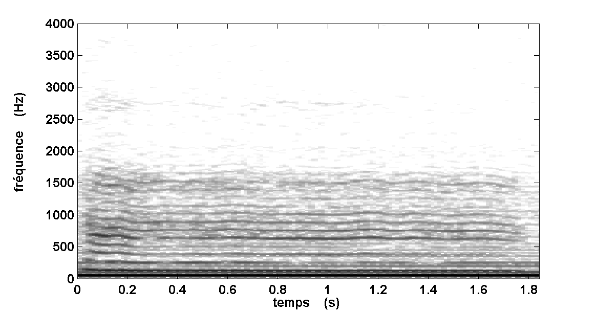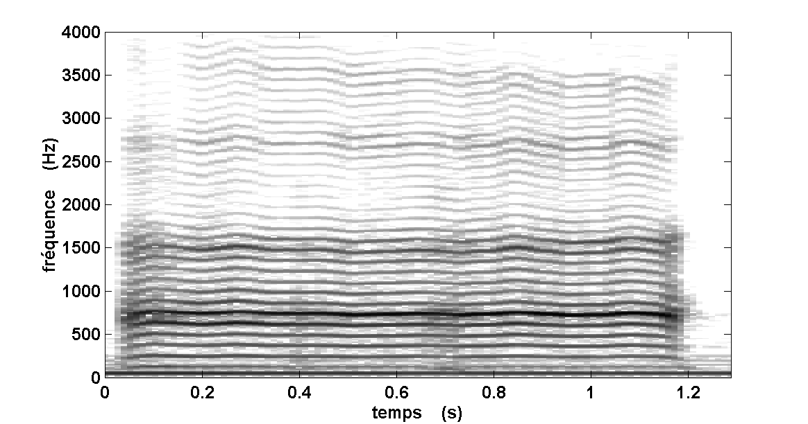
Voix relâchée Voix tendue
U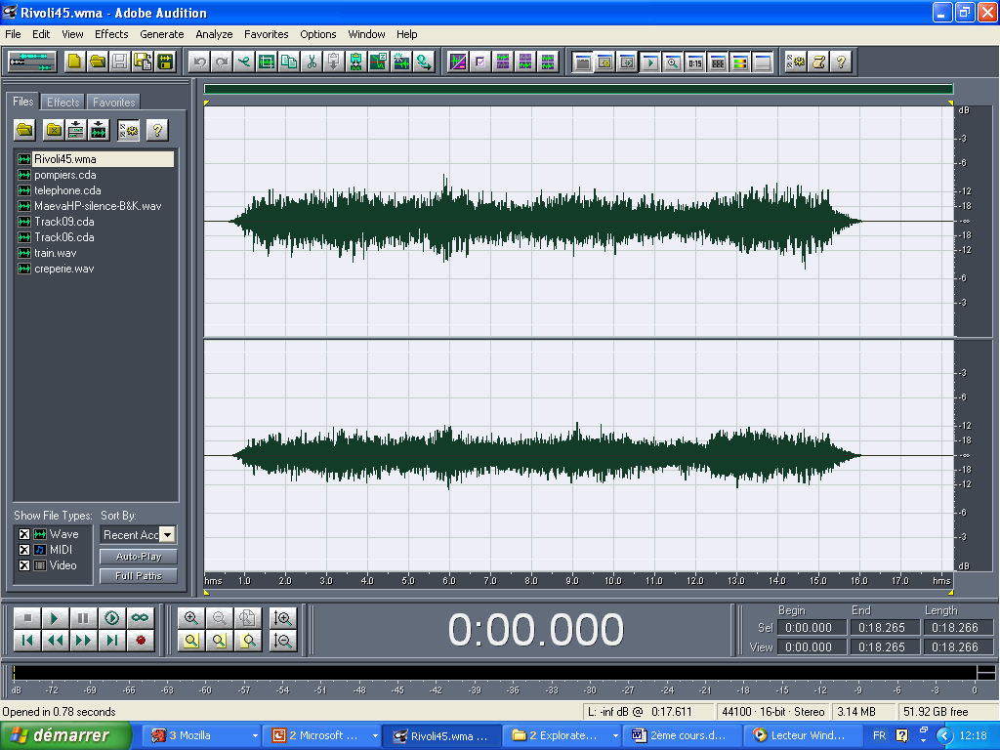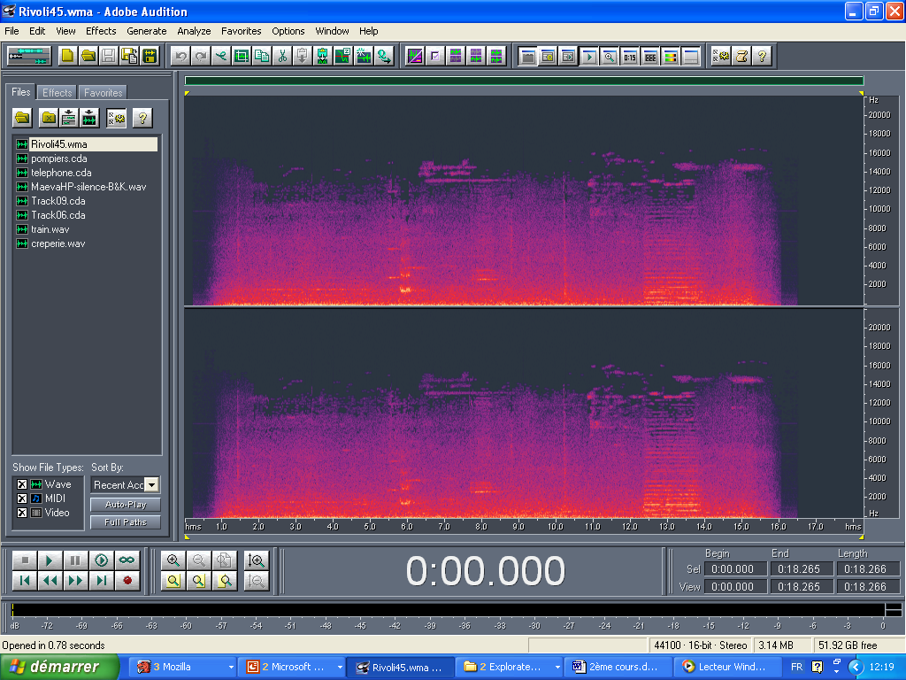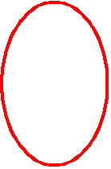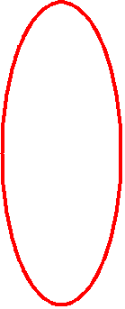n autre intérêt de la représentation du signal à l’aide d’un spectrogramme est de pouvoir séparer des sources sonores, ou du moins de pouvoir repérer des événements, là où le signal temporel englobe tout de façon indifférenciée.
Pour des sons très harmoniques (par exemple voix chantée), le spectrogramme permet de repérer très facilement la fondamentale ainsi que la série harmonique.
Sur la figure ci-dessous est représenté le spectrogramme d’un chanteur effectuant un glissando du bas au haut de sa tessiture puis l’inverse.
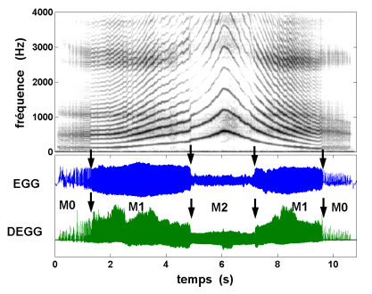
Dans le cas de la voix parlée, on peut repérer les parties voisée (harmoniques) ou non, et même « lire » quels sont les phonèmes prononcés avec un peu d’expérience. Nous reviendrons là dessus dans le chapitre 5.
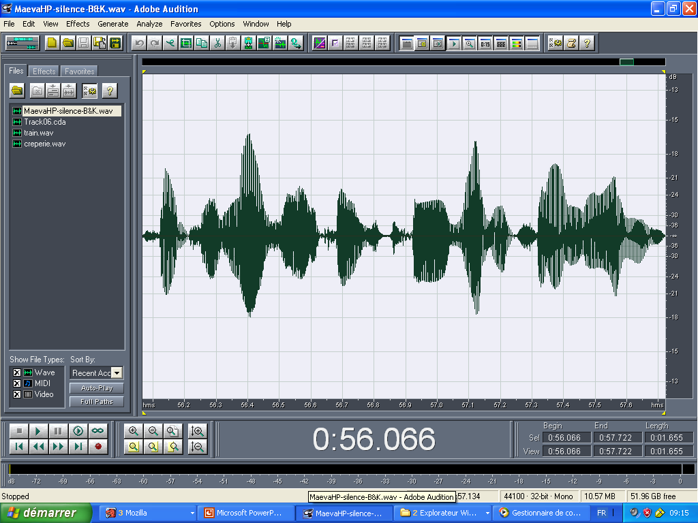
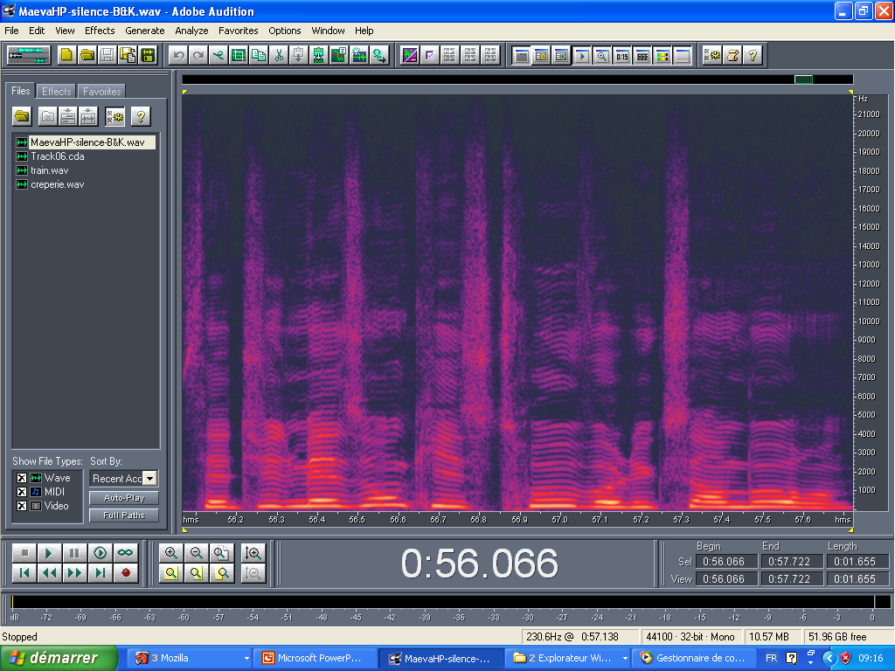
« C’est une maison qui s’trouve au Luxembourg »
Il est également très utile dans certains cas de représenter une partie du signal sous forme de spectre moyenné. Le spectre moyenné, comme son nom l’indique, consiste à faire la moyenne du spectrogramme sur l’ensemble des instants d’un intervalle de temps plus ou moins long . Ce peut être sur le signal tout entier comme sur un morceau particulier.
Pour examiner une voyelle en particulier dans un signal de parole par exemple, il est tout à fait approprié de moyenner le spectrogramme sur l’intervalle de temps de cette voyelle, de façon à pouvoir estimer les formants ou bien le contenu spectral de cette voyelle. Ainsi, sur la figure suivante, on peut examiner le spectre moyenné de la production vocale d’un chanteur sur un /a/. Cette représentation permet de caractériser ses premiers formants vocaliques, ainsi que son formant du chanteur (renforcement énergétique dans la zone 2000-4000 Hz), caractéristique des chanteurs lyriques et des acteurs de théâtre.
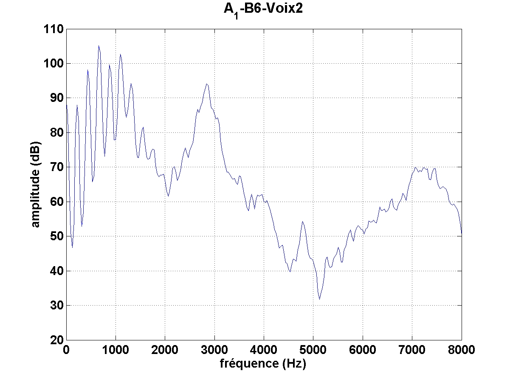
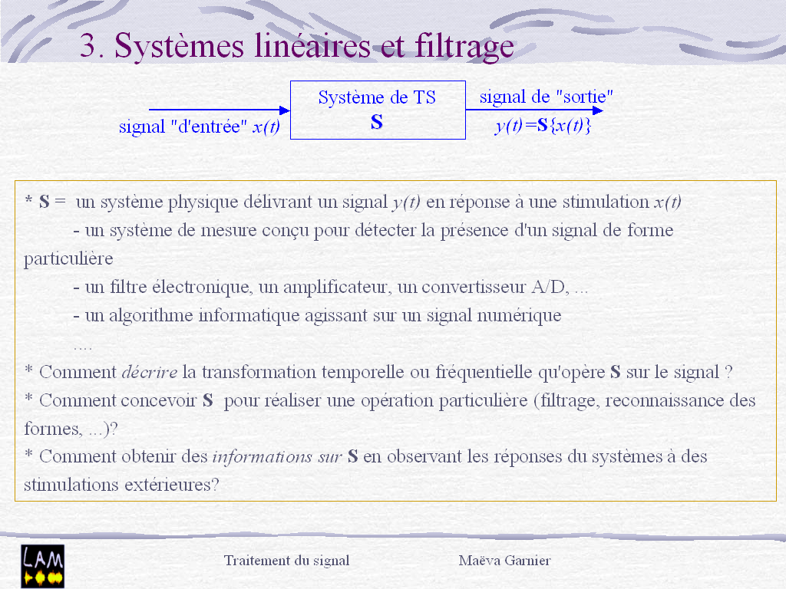
Il est possible de décrire un système S par l'intermédiaire de sa réponse à un signal extrêmement bref. Mathématiquement, il s’agit de modéliser sa réponse à une impulsion de Dirac.
La réponse impulsionnelle d’un système est donc définie comme la sortie d’un système lorsque l’entrée est une impulsion de Dirac.
g(t) = S{d(t)}
Lorsque nous claquons des mains dans une pièce pour évaluer son acoustique, son temps de réverbération, etc, nous ne faisons pas moins en fait qu’évaluer la réponse impulsionnelle de ce système pièce.
Cela semble physiquement logique d’entendre du son dans la pièce au moment où nous claquons dans nos mains, voire après, mais certainement pas avant . Pourtant, en mathématique, on conçoit que la réponse impulsionnelle puisse être non nulle avant l’instant de l’impulsion d’entrée.
On définit ainsi les système causaux comme les systèmes dont la réponse impulsionnelle est nulle avant l’instant d’impulsion, autrement dit g(t<0) = 0 .
Pour un système causal, le signal de sortie à l'instant t dépend du signal d'entrée aux instants t'< t. La durée de la réponse impulsionnelle g(t) correspond au temps de réponse du système.
Nous avons vu que la réponse impulsionnelle correspond à la sortie y(t) du système lorsque l’entrée x(t) = (t) .
Connaissant la réponse impulsionnelle g(t) d’un système, on peut ensuite prédire sa réponse y(t) à n’importe quel signal d’entrée x(t) grâce à la formule :
y(t) = x(t) * g(t)
S (t) g(t) S x(t) y(t)
= x(t) * g(t)
La réponse en fréquence d’un système correspond à la transformée de Fourier de la réponse impulsionnelle du système.
G(f) décrit comment la distribution spectrale d'un signal est modifiée ou "filtrée" par le système S. Il est important de noter que le système peut seulement modifier des composantes spectrales mais ne peut en aucun cas en créer de nouvelles.
|G(f)| est le gain du système, c’est à dire la façon dont il modifie les amplitudes de chaque composantes spectrales.
A
1 f
0 f
 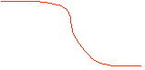
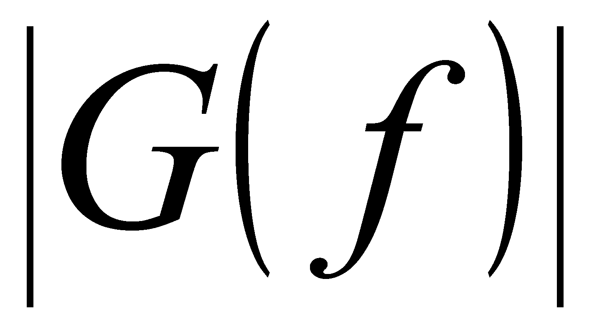
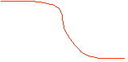
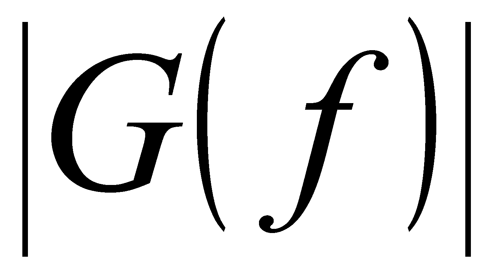
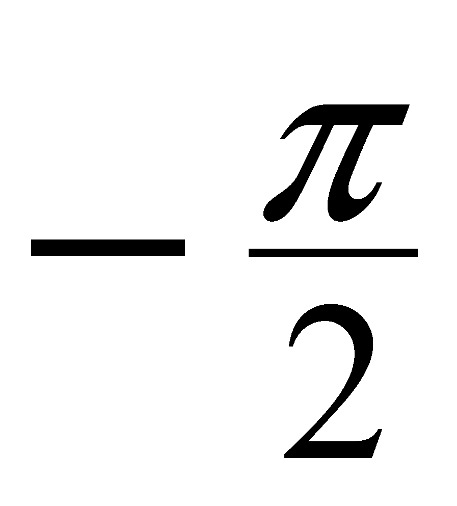
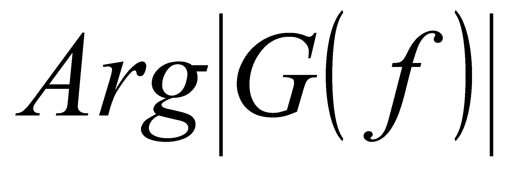
rg[G(f)]
représente le déphasage causé par le système,
c’est à dire le « retard » qu’il
impose à certaines composantes spectrales.
La réponse en fréquence, comme la réponse impulsionnelle permet de décrire complètement le système et de prédire la réponse du système à n’importe quelle entrée.
y(t) = x(t) * g(t) Y(f) = X(f) . G(f)
La fonction de transfert d’un système est défini comme la transformée en Z de la réponse impulsionnelle du système.
La Transformée en Z est très proche de la Transformée de Fourier et se définit par :
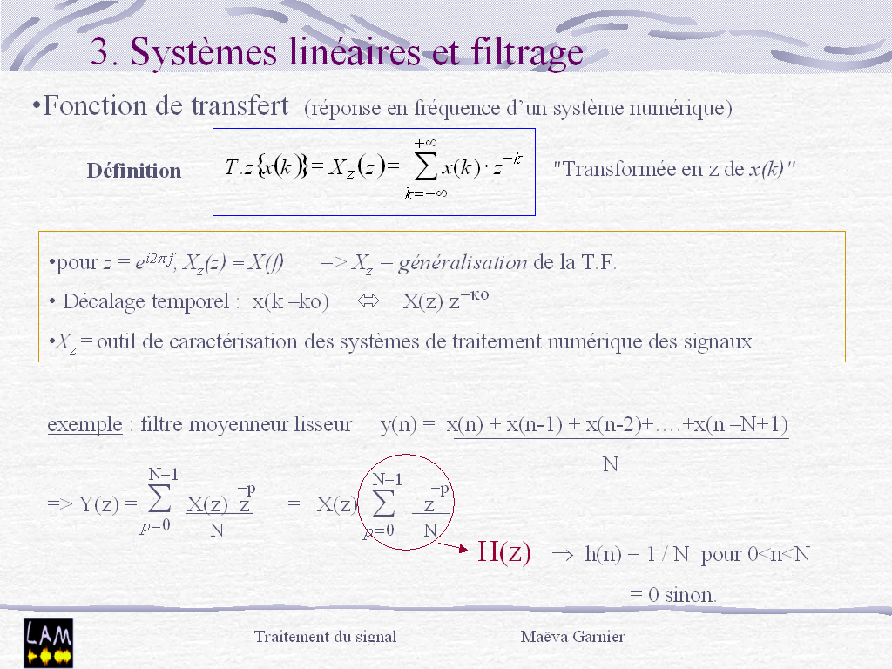
La TZ est un outil de caractérisation des systèmes de traitement numérique des signaux.
On retrouve la définition de la TF en posant z = ei2 f.
La TZ présente aussi comme propriété :
* Retard : x(k –ko) X(z) z-ko
*Convolution : x(k)*y(k) X(z).Y(z)
x(k).y(k) X(z)*Y(z)
D
onc
la réponse impulsionnelle g(n) et la fonction de transfert
G(z) permettent de décrire un système numérique.
y(n) = x(n) * g(n) Y(z) = X(z) . G(z)
Le filtrage linéaire est une opération utile pour sélectionner une partie du spectre d’un signal ou en atténuer une partie, pour
modifier le contenu spectral d’un signal ou encore pour m
odéliser la transformation d’un signal dans un conduit, dans une pièce…
On définit classiquement 4 types de filtres idéaux :
les filtres passe-bas qui laissent intact les basses fréquences d’un signal et en atténuent les hautes fréquences.
les filtres passe-haut qui laissent intact les hautes fréquences d’un signal et en atténuent les basses fréquences.
Les filtres passe-bande qui sélectionnent une partie du spectre d’un signal autour d’une fréquence spécifiée, avec une largeur plus ou moins grande.
Les filtres coupe-bande, qui atténuent fortement une partie du spectre d’un signal autour d’une fréquence spécifiée, avec une largeur plus ou moins grande.
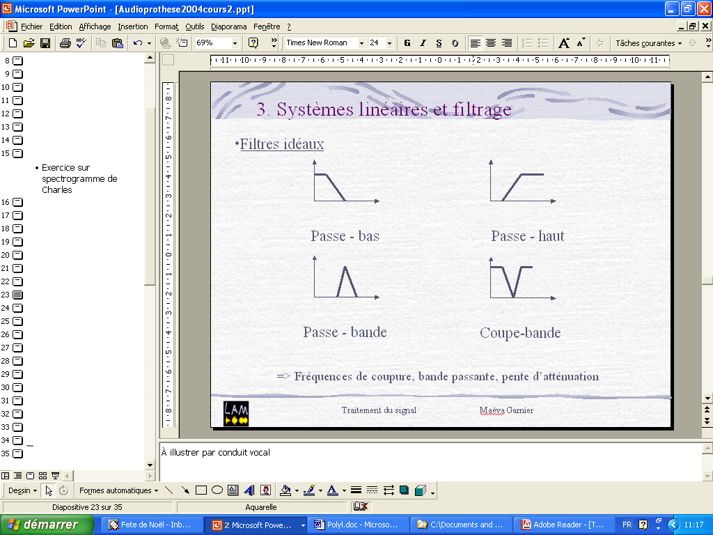
Pour tous ces filtres, on définit des fréquences de coupure, c’est à dire les fréquences pour lesquelles le spectre du signal d’entrée va être atténué d’un facteur √2.
A
max A max/ √2
fc
Le passe bas à donc une fréquence de coupure dans les médiums / hautes fréquences, le passe haut une fréquence de coupure dans les médiums / basses fréquences. Les passe bande et coupe bande possèdent deux fréquences de coupure autour de la fréquence centrale sur laquelle ils se centrent.
On spécifie également la pente de l’atténuation de ces filtres, en dB par octave. Cela apporte une information sur la sélectivité du filtre.
Enfin, pour les filtres passe-bande et coupe-bande, on détermine leur largeur de bande, c’est à dire la différence entre leurs deux fréquences de coupure, ce qui renseigne sur le caractère plus ou moins « aigu » du filtre.
fc2
– fc1
On peut modéliser la sensation d’intensité auditive par un filtre. L’oreille humaine est particulièrement sensible entre 3 et 4 kHz
On peut également modéliser la production phonatoire par un modèle source-filtre, où le rôle de la source est joué par les cordes vocales qui produisent un son harmonique avec une distribution de l’énergie assez plate en fréquence. Le conduit vocal, les fosses nasales ainsi que la place des articulateurs (langue, mâchoire, lèvres) peuvent être modélisés par un filtre qui modifie le son glottique pour produire le son tel que nous le percevons à la sortie des lèvres d’un locuteur.
David B. Conférence SFA sur le vibrato. Décembre 2003. Le mans.
Garnier M, Dubois D, Poitevineau J, Henrich N, Castellengo M. Perception et description verbale de la qualité vocale dans le chant lyrique : une approche cognitive. Journées d’Études sur la Parole, Fez, 2004. .
Henrich N. Etude de la source glottique en voix parlée et chantée. Thèse de doctorat, UPMC. 2001.
Pelorson X. Conférence SFA « cordes vocales et lèvres vibrantes ». Juillet 2004. Paris
Charbit M. Polycopié ENST. Bases de Traitement du signal. 2004
Heiser T. Traitement du signal, support de cours. UFR Sciences Physiques. université Louis Pasteur, Strasbourg
Feng. Traitement du signal, support de cours. ENSERG. INP Grenoble. 2000.
Dutoit T. Introduction au Traitement Automatique de la Parole Faculté Polytechnique
de Mons. 2004